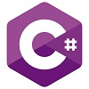

-
Flutter Dart

It just sounds very useful and cool to learn. Just like fidget spinners used to be back in the school days. They were very cool and so is this, doesnt do much but what it does, it does with excellence. Ok i jus got to know that its like a mix of Java and C# whilst initially being intended to replace JavaScript, that has me extremely curious now. -
Java

Java reminds me of fantasy, mushrooms, wizards, magic, harry potter, potions, coffee, marshmallows and other similar things. I have no idea how it works and whether i'll like it after learning it (this goes for every language here) but I just love hearing about it. -
C++

C++ screams GigaChad.This is the language I actually started coding in. Even though i've been copy pasting PowerShell commands since I was a kid, the first PROGRAMMING language was C++ (I actually dont wanna admit it was PowerShell now that i've thought about it. But tbh, I was just copy pasting commands but still its coding, my fate was sealed a long time ago, I can no longer flex that I started with C++. sigh). Really love its syntax somehow, it's the most readable, to me atleast. I didnt like Python's indentation shit. -
C#

Its like a mixture of Java and C++, now even tho this should technically excite me the most, it somehow doesnt, it definetly will be VERY useful to me, but doesnt excite me as much. Still tho, I am hyped xD. -
Ruby (on rails)
I dont like Python at all and I've heard it is very similar, but it just sounds much cooler tbh. Python is something everyone is learning and It's decent for what it does, but Ruby is for artists in some way, shape or form.